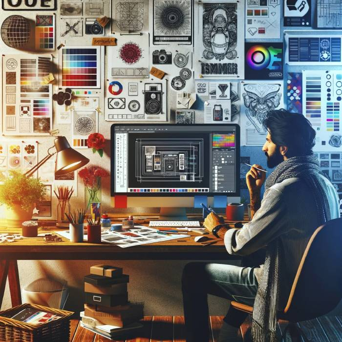
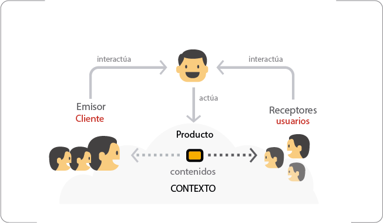
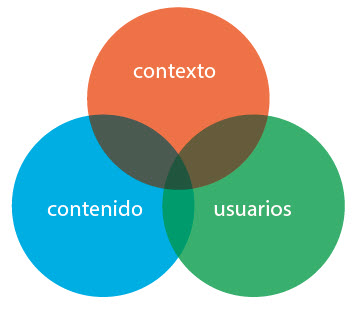

3. Fase de diseño

La fase de diseño en el desarrollo de sitios web
La fase de diseño en el desarrollo de sitios web
La fase de diseño en el desarrollo de sitios web es donde se da vida a las ideas y planes concebidos en la etapa de análisis y planificación. En esta etapa, se toman decisiones cruciales sobre la apariencia visual y la experiencia del usuario (UX) del sitio web. El diseño no es solo cuestión de estética; también debe enfocarse en la funcionalidad, asegurando que el sitio sea intuitivo y fácil de navegar para los usuarios. Los diseñadores crean maquetas y prototipos, utilizando herramientas como Adobe XD, Figma o Sketch, para visualizar la disposición de los elementos en la página, los esquemas de color, las tipografías y otros componentes visuales. Esta visualización ayuda a los stakeholders a entender cómo se verá y sentirá el sitio antes de entrar en la fase de desarrollo. Además, la UX juega un papel fundamental en esta fase, centrándose en crear una experiencia de usuario fluida y agradable. Esto implica investigar y entender las necesidades y comportamientos del usuario final para diseñar interfaces que sean lógicas, coherentes y fáciles de usar. Se consideran aspectos como la arquitectura de la información, los caminos de navegación y la accesibilidad para garantizar que el sitio web sea inclusivo y accesible para todos los usuarios.
El diseño también incluye la creación de una identidad visual coherente que refleje la marca y los valores de la empresa o producto. Esto a menudo implica trabajar estrechamente con equipos de marketing y branding para asegurar que el sitio web se alinee con la imagen de marca existente o, en el caso de nuevas empresas, ayudar a definir una nueva identidad de marca. Elementos como logotipos, paletas de colores, y estilos gráficos son definidos en esta etapa para crear una experiencia de usuario que sea visualmente atractiva y memorable. Además, se toman decisiones sobre el contenido multimedia, como imágenes, videos y animaciones, que se integrarán en el sitio web. Estos elementos no solo mejoran la estética del sitio, sino que también juegan un papel crucial en la comunicación del mensaje y en la captura de la atención del usuario.
La fase de diseño debe considerar la adaptabilidad y la respuesta del sitio web a diferentes dispositivos y tamaños de pantalla, un concepto conocido como diseño responsivo. Con el uso creciente de smartphones y tabletas para acceder a internet, es esencial que el sitio web funcione sin problemas en una variedad de dispositivos. Esto significa que los diseños deben ser flexibles y capaces de ajustarse automáticamente para proporcionar una experiencia de usuario óptima, independientemente del dispositivo utilizado. Además, el diseño responsivo no solo mejora la experiencia del usuario, sino que también es un factor importante para el SEO (optimización de motores de búsqueda), ya que los motores de búsqueda como Google dan preferencia a los sitios web que son amigables con dispositivos móviles. En resumen, la fase de diseño es una mezcla de arte y ciencia, donde la creatividad se combina con la técnica para crear sitios web que no solo son hermosos, sino también funcionales y accesibles para todos.
Diseño UX
El diseño de Experiencia del Usuario (UX)
El diseño de Experiencia del Usuario (UX) se enfoca en expandir los conceptos previamente mencionados para crear una interacción armónica entre individuos y tecnología. De esta interacción emergen emociones y percepciones hacia el producto, las cuales son cuantificables y susceptibles de mejora.
En el contexto de productos digitales diseñados con objetivos comerciales, es crucial equilibrar las metas empresariales con las necesidades y expectativas de los usuarios. Esto implica otorgar más importancia a estos últimos aspectos que a la tecnología utilizada, situando la tecnología en un segundo plano tras la fase de conceptualización.
Las metodologías para desarrollar un producto varían y no son estrictas. Especialmente en la creación de productos digitales, las fases de diseño se adaptan a los tres elementos descritos por Morville en 2004, que establecen que cada proyecto depende de los usuarios, el contexto y los contenidos, que son únicos en cada situación. Así, la tarea principal del diseñador consiste en alcanzar un balance en este proceso de comunicación entre los Emisores (clientes) y los Receptores (usuarios).
- Clientes: Las necesidades comunicativas que establece la persona o institución que solicita o encarga el producto.
- Usuarios: Las necesidades informativas y funcionales de las personas que van a usar el producto.

En el diseño de software no existe nada absoluto, todo varía en función del contexto, los contenidos y los usuarios. Por ello, es difícil definir pautas o metodologías rígidas para su realización, y se hace imprescindible que los diseñadores afronten de forma flexible cada proyecto concreto

Metodología del diseño Centrado en el usuario (DCU)
El concepto de DCU se utilizó como marco de trabajo, investigación y desarrollo de principios del diseño de interfaces de usuario, con el propósito de observar cómo la gente usaba los sistemas y creaba sus propios modelos mentales a partir de los procesos de interacción. Tres fueron los términos que debían ser valorados para entender estos procesos:
- El modelo conceptual: Ofrecido por el diseñador del sistema.
- Interfaz: La imagen que el sistema presenta al usuario.
- El modelo mental: Desarrollado por el usuario a partir de la imagen.
DCU persigue asegurar la consecución de un producto con la funcionalidad adecuada para usuarios concretos. Su objetivo es ofrecer respuesta a preguntas como
- ¿Quién usará este sistema?
- ¿Qué es lo que va a hacer con él?
- ¿Qué información necesitará para alcanzar sus objetivos?
Etapas UX
Etapa 1: Investigación
Durante esta etapa se trata de obtener la mayor cantidad de información posible y necesaria para el proyecto a realizar, tanto acerca del cliente como de los usuarios. El correcto balance entre demandas y necesidades de unos y otros es lo que lleva al éxito el producto a crear. Las actividades que se realizan en esta etapa son:
- Definir escenarios.
- Estudio del contexto.
- Definir perfiles de usuarios.
- Estudio de los Contenidos.
- Estudio de Usuarios (receptores).
- Definir el modelo de negocio.
- Investigar sus necesidades. (de información, formación, etc.).
- Definir la intensión comunicativa del producto (Informar, entretener, alertar).
- Definir los objetivos de los clientes o emisores con el producto.
- Definir las necesidades generales del proyecto.
- Definir la temática general del producto a realizar o rediseñar.
- Realizar un inventario de recursos de información del producto.
- Caracterizar a los usuarios. (tipología, roles, etc.).
- Realizar mapas de conceptos (Concept Map).
- Definir de manera general a los usuarios del producto, su contexto de uso, y los contenidos que tendrá el mismo.
- Definir las características del contexto de uso (culturales, políticas, económicas, sociales y tecnológicas).
Etapa 2: Organización
Etapa cuando el diseñador UX usa tanto criterios científico-técnicos como culturales para organizar toda la información obtenida durante la etapa anterior. Las actividades que se realizan en esta etapa son:
- Representar todas las estructuras posibles de los contenidos, en correspondencia a las necesidades de usuarios, propósitos del negocio y contexto de uso.
- Hacer corresponder las estructuras planteadas a las necesidades tanto de emisores (clientes) como de receptores (usuarios).
- Definir todos los flujos funcionales que tendrá el producto digital, correspondiendo con los flujos reales de los usuarios en su contexto.
Los artefactos generados durante esta etapa serían: Mapa de Arquitectura, Mapas de navegación y Flujogramas.
Etapa 3: Prototipado
Es la etapa en la que se plasman los resultados de la etapa anterior, ahora con todos los requerimientos técnicos con el fin de que sean comprendidos por usuarios, cliente y el resto del equipo de trabajo. Las actividades que se realizan en esta etapa son:
- Definir las pantallas del producto (diagramas de presentación o prototipos en baja).
- Definir los servicios y funcionalidades que tendrá el producto.
- Definir las etiquetas del producto (labeling).
- Crear prototipos de alto nivel, funcionales y simulando la interactividad de las tareas a ser testeadas.
Los artefactos generados durante esta etapa serían: Diagramas digitales y wireframes que son prototipos de alta documentados, guías de usabilidad.
Etapa 3: Pruebas
Es la etapa en la que se comprueban las propuestas en prototipos de alta. Las pruebas se realizan a usuarios finales previa aprobación del cliente con el objetivo de saber si se han logrado los objetivos y demandas planteadas. El objetivo de hacer pruebas con usuarios es saber si están resueltas las necesidades identificadas. Las actividades que se realizan en esta etapa son:
| Pruebas de prototipos. |
|---|
| Revisión de diagramas. |
| Comprobación de robustez en el etiquetado. |
| Comprensión de los servicios diseñados por parte de los usuarios |
Los artefactos generados durante esta etapa serían: Informes evaluativos, reportes de testeos con tiempos por tarea.
Etapa 5: Diseño
En esta etapa los diseñadores de interacción UI reciben como documentos los wireframes (prototipo en alta), Manual de identidad visual del cliente para generar las pantalla en diseño gráfico. Se define la iconografía, tipografía y estilo de diseño final. Las actividades que se realizan en esta etapa son:
- Diseño gráfico de cada pantalla del producto digital.
- Elaboración de una Guía de diseño de interacción.
Los artefactos generados durante esta etapa serían: Archivos de diseño gráfico, Guía de diseño de interacción y manual de estilos.
Técnicas
Test A/B
Esto permitirá construir diferentes versiones de una página y se lo mostrará a diferentes usuarios, así se visualizará cuál de las páginas permite una mejor interacción y hacer las mejoras que correspondan. Para usar esta técnica no olvide configurar Google Analytics con ambas páginas ya que de ahí podrá extraer al detalle toda la información que necesita.
Creazy Egg
Es muy fácil de usar y muy útil, esta permite visualizar capas de color que indican por dónde se mueven más los usuarios cuando navegan en el sitio.
Eyetracking
Una de las dificultades dentro del estudio de necesidades del usuario es que a veces no logran especificar sus necesidades inconscientes. Es una tecnología muy útil que le enseñará lo que ven los usuarios cuando llegan al sitio. No es muy difundida, pero si es recomendable para saber si el sitio web está llamando la atención justo en el lugar que se necesita. Con esta herramienta podrá saber tres puntos básicos: dónde mira, cuánto tiempo mira y cuál es el orden visual, es decir el trayecto que siguen sus ojos en la web.
Usabilidad de laboratorio
Esta técnica consta de someter a prueba alos usuarios, entrevistándolos por separado y pedirles que realicen una serie de tareas en el sitio para identificar el nivel de dificultad que puedan presentar.
De esta forma se puede saber:
- Qué tan complicado pueda ser navegar por determinada página o encontrar determinada información.
- Cuáles son los obstáculos que se deben reparar en el sitio.
- Mientras más pronto se detecten los problemas menos costos implicarán.
- No desarrollar con tecnología que no funcionará al final.
Prueba de campo geográfico
Esto permitirá reunirse con usuarios en su propio entorno, de esa forma se podrá identificar los problemas o dificultades en el contexto de uso. Esta prueba es muy importante porque permite ponerse en el lugar del usuario y tener más claro qué y cómo necesita determinadas mejoras de usabilidad en el sitio.
Business Origami
Esta es una técnica que sirve cuando el sistema de un producto o servicio es muy complicado y se necesita crear una interacción entre usuario-producto-ambiente. Los usuarios le permitirán solucionar el problema, para esto debe asegurarse de contar con diferentes perfiles de usuarios. Esta técnica consta que ellos mismos cuenten sus experiencias de interacción de manera particular y así conseguir ideas para destrabar el flujo de interacción. Si se les da la oportunidad a los usuarios de hablar, ellos lo harán. Esta es una herramienta muy poderosa para conseguir ideas de usabilidad que ayude directamente a los usuarios.
Evaluación experta o paseo cognitivo
Permite identificar determinadas funcionalidades para poder establecer los pasos necesarios en la implementación.
Análisis de tendencias visuales o Benchmarking
Mediante este proceso se recopila información de la competencia con el fin de mejorar aspectos importantes en la empresa que lideramos.
Evaluación heurística
Es un análisis experto de los elementos creados en el proyecto, desde diseño gráfico, contenidos, tecnología, usabilidad, entre otros.
Flujogramas
Es una herramienta visual que permite identificar los pasos y situaciones de importancia para mantener un buen orden en el proceso.
Card-Sorting
Es una técnica de organización de contenido mediante tarjetas que los usuarios agrupan o clasifican según su interacción.
Diagrama de afinidad
Es una herramienta que se enfoca a identificar un problema mediante una lluvia de ideas provenientes de quienes saben del tema.
Mapa de empatía
Permite ponernos en el lugar del cliente, saber qué ve, qué siente, qué piensa y qué escucha.
Customer Journey
Permite identificar las etapas por las que pasa un usuario desde el deseo de un bien o servicio, hasta que lo adquiere.
Ficha Escenario Persona
Es una ficha en la cuela se crea el perfil de una persona con propiedades de los usuarios. Luego de esto se forman los escenarios para conseguir características tanto demográficas como personales para asignarles tareas específicas que deben realizar en interacción con la aplicación. Se debe tener en cuenta que se crea una ficha por usuario.
Herramientas
Existen diferentes herramientas recomendables para un proyecto de UX, desde el diseño, investigación, prototipado y lanzamiento. Cada etapa es importante y para realizarla con éxito te recomendamos algunas herramientas que podrían ayudarte en cada proceso.
UxPin
Permite crear desde prototipos de baja fidelidad, hasta de gran definición.
Marvel
Es una herramienta online que permite transformar bocetos en prototipos interactivos.
Balsamiq
Es un programa online para la creación de esquemas con la que se puede trabajar desde cualquier lugar mediante su web.
Pencil Project
Una herramienta gratuita para realizar Mockups para webs y aplicaciones, muy fácil de usar y de instalar.
Axure RP Pro
Programa para creación de interfaces web que permite probar su funcionalidad desde el mismo programa sin necesidad de subir elementos a la web.
LookBack
Potente plataforma que permite ver la interacción de los usuarios, permitiendo identificar los problemas.
E-encuestas
Una plataforma para crear encuestas online con la posibilidad de usar plantillas editables o hacer tu propia encuesta.
Microsoft Visio
Herramienta para crear diagramas que permite plasmar rápidamente información compleja.
OmniGraffle (OSX)
Potente herramienta para crear diagramas, esquemas, y diferentes gráficos que organizan la información
MindManager
Programa especializado en la creación de mapas mentales mediante plantillas editables.
CMapTools
Un programa que facilita la organización de ideas mediante esquemas mentales a base de plantillas y que permite convertir los esquemas en formato web.
Camtasia Studio
Un programa de video que permite captar lo que ocurre en una pantalla, con lo cual se pueden hacer estudio sobre la navegación de usuarios.